第十章 重积分
一元定积分是把区间细分、在小线段上取近似并求极限的过程，用于计算平面曲边梯形面积和一维非均匀分布物理量. 当研究对象扩展到平面二维空间乃至立体三维空间时，例如计算空间立体的体积、曲面面积、非均匀平面薄板或立体构件的质量、质心以及转动惯量，就需要将一元积分推广到二维平面闭区域上的二重积分（Double Integral）和三维立体闭区域上的三重积分（Triple Integral）. 重积分的本质仍然是某种特定和式的极限. 本章将建立二重积分与三重积分的严格概念，系统推导直角坐标系、极坐标系、柱面坐标系与球面坐标系下的化二次积分算法，并深入探讨其在空间几何体积、曲面面积、质心与引力计算中的综合应用.
第一节 二重积分的概念与性质
一、引例：曲顶柱体的体积
设底面为 $xOy$ 平面上的闭区域 $D$，顶面为连续曲面 $z = f(x, y) \ge 0$，侧面以 $D$ 的边界曲线为准线、母线平行于 $z$ 轴的柱面，这一立体称为曲顶柱体（图 10-1、图 10-2、图 10-3）.
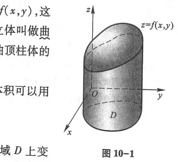
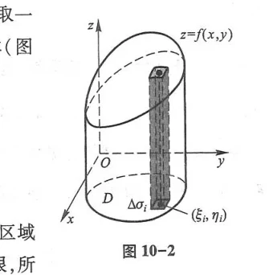
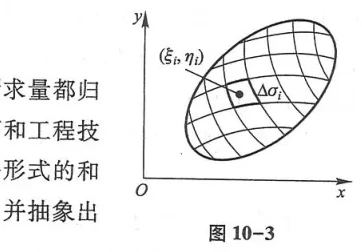
采用经典“分割、近似、求和、取极限”四步法：
- 用任意网格曲线将底面区域 $D$ 分割成 $n$ 个小闭区域 $\Delta\sigma_1, \Delta\sigma_2, \dots, \Delta\sigma_n$；
- 在每个小区域 $\Delta\sigma_i$ 上任取一点 $(\xi_i, \eta_i)$，以此点函数值 $f(\xi_i, \eta_i)$ 为高、小区域面积 $\Delta\sigma_i$ 为底，作小圆柱，其小体积近似为 $\Delta V_i \approx f(\xi_i, \eta_i)\Delta\sigma_i$；
- 曲顶柱体总体积近似为 $V \approx \sum_{i=1}^n f(\xi_i, \eta_i)\Delta\sigma_i$；
- 令小区域直径的最大值 $\lambda \to 0$，和式的极限即为总体积：$V = \lim_{\lambda \to 0}\sum_{i=1}^n f(\xi_i, \eta_i)\Delta\sigma_i$.
二、二重积分的定义
设函数 $f(x, y)$ 在平面有界闭区域 $D$ 上有定义. 如果极限
$$\lim_{\lambda \to 0} \sum_{i=1}^n f(\xi_i, \eta_i)\Delta\sigma_i = I$$
不论区域 $D$ 如何分割，也不论点 $(\xi_i, \eta_i)$ 如何选取，极限值 $I$ 恒存在且唯一，则称函数 $f(x, y)$ 在闭区域 $D$ 上可积，并称此极限为函数在 $D$ 上的二重积分，记作：
$$\iint_D f(x, y)d\sigma \quad \text{或} \quad \iint_D f(x, y)dxdy$$
- 线性性质：$\iint_D [k_1 f(x, y) \pm k_2 g(x, y)]d\sigma = k_1 \iint_D f(x, y)d\sigma \pm k_2 \iint_D g(x, y)d\sigma$
- 区域可加性：若 $D = D_1 \cup D_2$，且 $D_1, D_2$ 无内部公共点，则 $\iint_D f d\sigma = \iint_{D_1} f d\sigma + \iint_{D_2} f d\sigma$
- 中值定理：设 $f(x, y)$ 在闭区域 $D$ 上连续，$\sigma$ 为 $D$ 的面积，则在 $D$ 内至少存在一点 $(\xi, \eta)$，使得： $$\iint_D f(x, y)d\sigma = f(\xi, \eta)\sigma$$
第二节 二重积分的计算法
一、直角坐标系下的二次积分
二重积分的实际计算是通过转化为两次连续的一元单积分（二次积分，累次积分）来实现的（富比尼定理 Fubini's Theorem）.
1. X-型区域（先 $y$ 后 $x$ 积分）
区域形如 $D = \{(x, y) \mid a \le x \le b, \varphi_1(x) \le y \le \varphi_2(x)\}$（图 10-4、图 10-5）：
$$\iint_D f(x, y)dxdy = \int_a^b dx \int_{\varphi_1(x)}^{\varphi_2(x)} f(x, y)dy$$
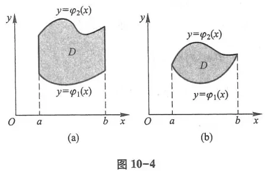
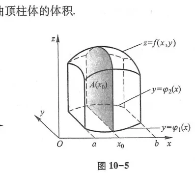
2. Y-型区域（先 $x$ 后 $y$ 积分）
区域形如 $D = \{(x, y) \mid c \le y \le d, \psi_1(y) \le x \le \psi_2(y)\}$（图 10-6、图 10-7）：
$$\iint_D f(x, y)dxdy = \int_c^d dy \int_{\psi_1(y)}^{\psi_2(y)} f(x, y)dx$$
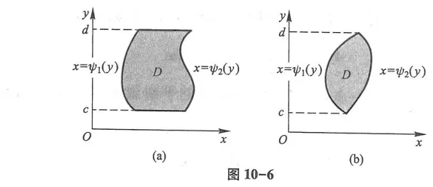
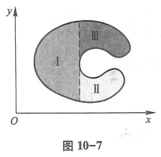
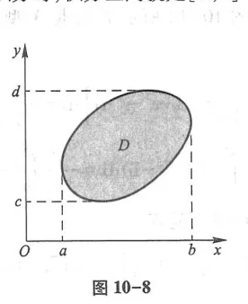
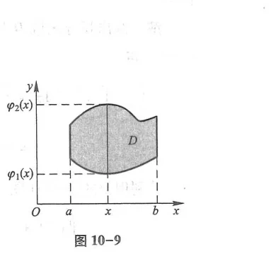
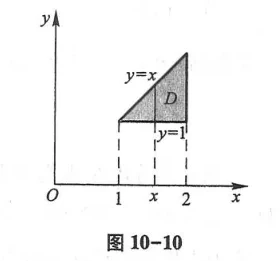
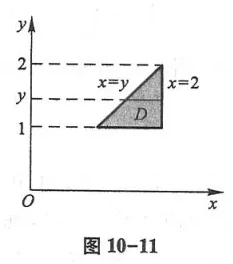
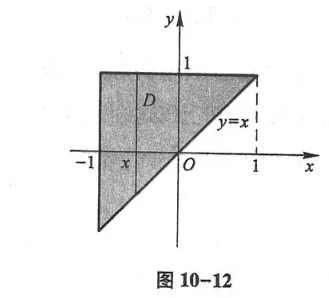
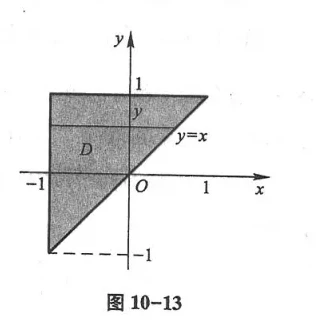
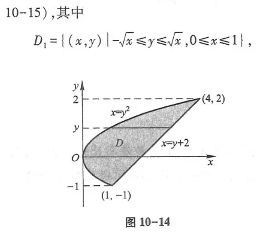
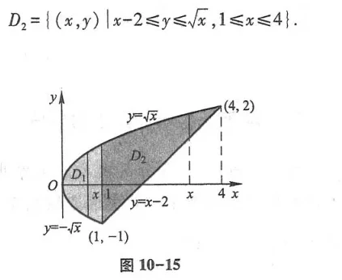
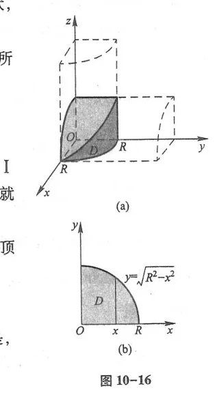
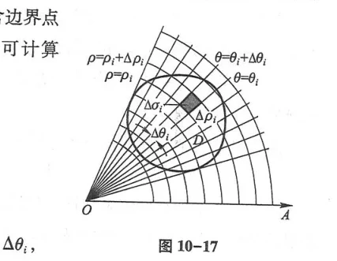
二、极坐标系下的二次积分
当积分区域为圆形、扇形、圆环，或被积函数含有 $x^2 + y^2$ 时，采用极坐标变换 $x = r\cos\theta, y = r\sin\theta$（图 10-18 至图 10-24）.
面积微元为 $d\sigma = r dr d\theta$. 二重积分化为极坐标二次积分公式为：
$$\iint_D f(x, y)dxdy = \int_\alpha^\beta d\theta \int_{r_1(\theta)}^{r_2(\theta)} f(r\cos\theta, r\sin\theta) r dr$$
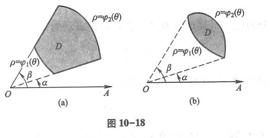
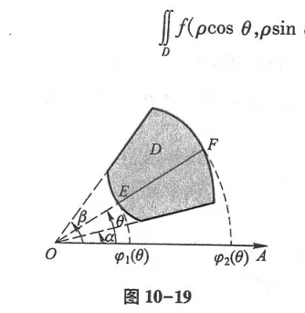
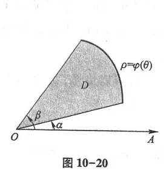
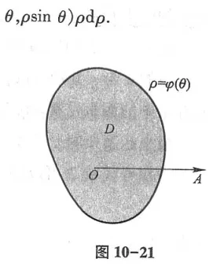
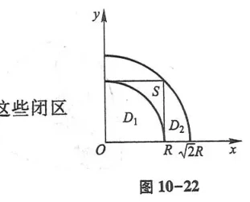
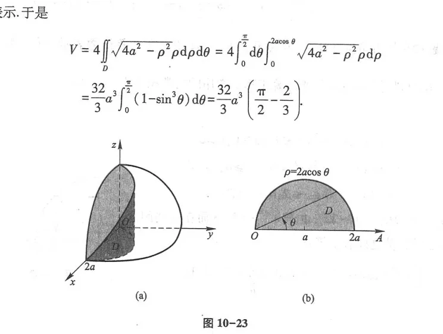
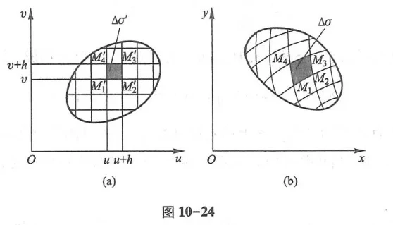
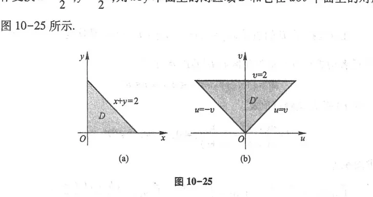
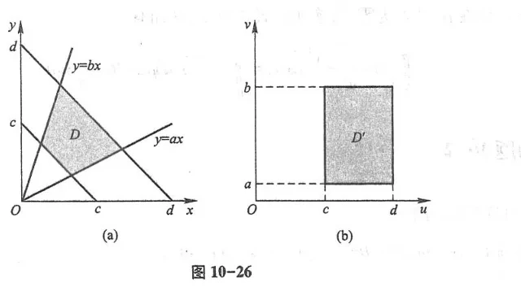
第三节 三重积分
一、三重积分的定义
设 $f(x, y, z)$ 为空间有界闭立体 $\Omega$ 上的连续函数（图 10-27、图 10-28）：
$$\iiint_\Omega f(x, y, z)dv = \lim_{\lambda \to 0}\sum_{i=1}^n f(\xi_i, \eta_i, \zeta_i)\Delta v_i$$
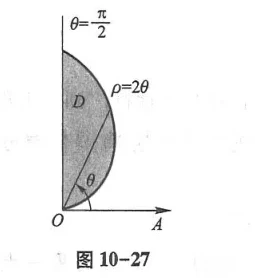
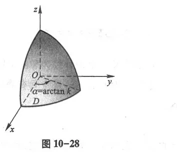
二、常用三种坐标系下的三重积分计算
1. 直角坐标系（“投影法”先一后二）
若立体 $\Omega$ 投影在 $xOy$ 面上为区域 $D_{xy}$，上下底曲面为 $z_1(x, y) \le z \le z_2(x, y)$（图 10-29、图 10-30、图 10-31）：
$$\iiint_\Omega f(x, y, z)dxdydz = \iint_{D_{xy}} dxdy \int_{z_1(x, y)}^{z_2(x, y)} f(x, y, z)dz$$
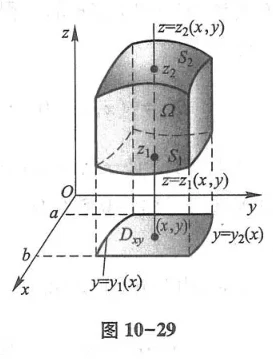
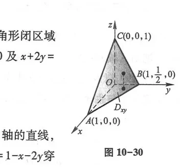
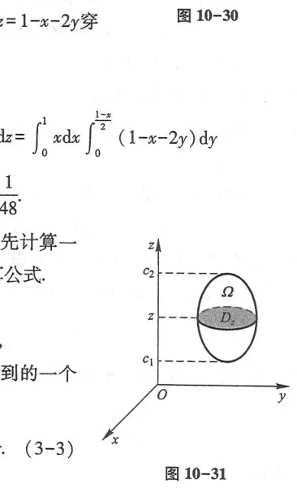
2. 柱面坐标系（Cylindrical Coordinates）
$x = r\cos\theta, y = r\sin\theta, z = z$，体积微元为 $dv = r dr d\theta dz$（图 10-32、图 10-33、图 10-34）：
$$\iiint_\Omega f(x, y, z)dv = \iiint_\Omega f(r\cos\theta, r\sin\theta, z) r dr d\theta dz$$
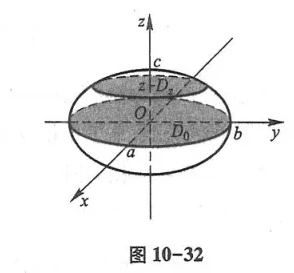
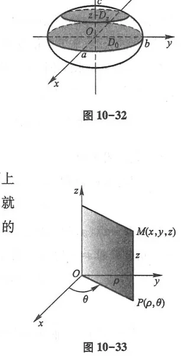
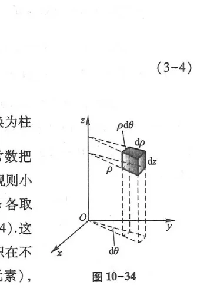
3. 球面坐标系（Spherical Coordinates）
$x = r\sin\varphi\cos\theta, y = r\sin\varphi\sin\theta, z = r\cos\varphi$（$r \ge 0, 0 \le \varphi \le \pi, 0 \le \theta \le 2\pi$），体积微元为 $dv = r^2\sin\varphi dr d\varphi d\theta$（图 10-35、图 10-36、图 10-37）：
$$\iiint_\Omega f(x, y, z)dv = \iiint_\Omega F(r, \varphi, \theta) r^2\sin\varphi dr d\varphi d\theta$$
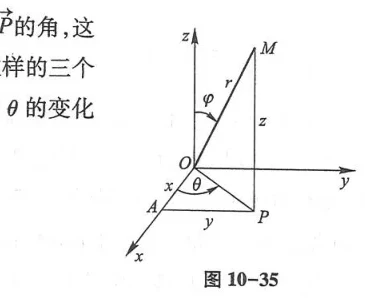
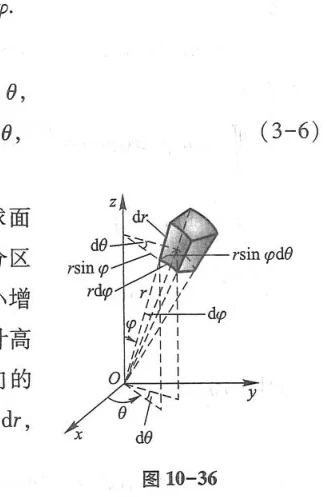
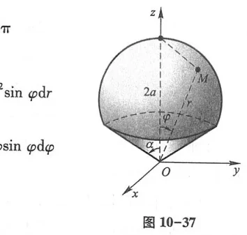
第四节 重积分的应用
一、曲面的面积
光滑空间曲面 $z = f(x, y)$ 在区域 $D$ 上的面积公式（图 10-38、图 10-39）：
$$A = \iint_D \sqrt{1 + \left(\frac{\partial z}{\partial x}\right)^2 + \left(\frac{\partial z}{\partial y}\right)^2} dxdy$$
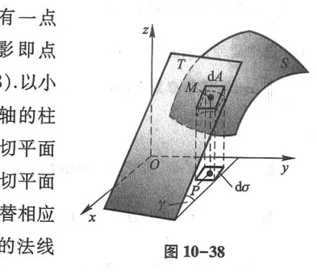
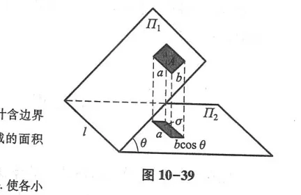
二、质心坐标与转动惯量
非均匀立体 $\Omega$ 密度为 $\rho(x, y, z)$，总质量为 $M = \iiint_\Omega \rho dv$（图 10-40、图 10-41、图 10-42）. 质心坐标公式：
$$\bar{x} = \frac{1}{M}\iiint_\Omega x \rho dv, \qquad \bar{y} = \frac{1}{M}\iiint_\Omega y \rho dv, \qquad \bar{z} = \frac{1}{M}\iiint_\Omega z \rho dv$$
绕各坐标轴的转动惯量：$I_z = \iiint_\Omega (x^2 + y^2)\rho dv, \quad I_x = \iiint_\Omega (y^2 + z^2)\rho dv, \quad I_y = \iiint_\Omega (x^2 + z^2)\rho dv$.
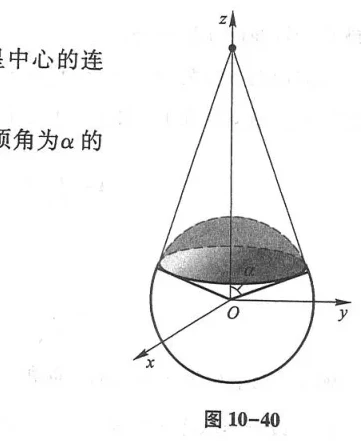
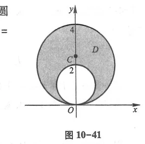
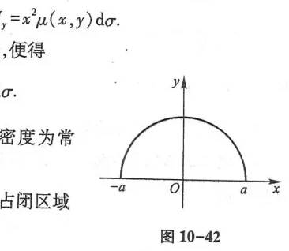
总习题十
1. 计算二重积分 $I = \iint_D e^{x^2 + y^2}dxdy$，其中 $D$ 为闭圆盘 $x^2 + y^2 \le R^2$.
解：变换为极坐标：$D: 0 \le \theta \le 2\pi, 0 \le r \le R$. 被积函数 $e^{r^2}$，面积元素 $r dr d\theta$：
$$I = \int_0^{2\pi} d\theta \int_0^R e^{r^2} r dr = 2\pi \left[\frac{1}{2}e^{r^2}\right]_0^R = \pi (e^{R^2} - 1)$$
2. 交换二次积分次序：$I = \int_0^1 dx \int_{x^2}^x f(x, y)dy$.
解：积分区域由 $y = x^2$（下曲线）与 $y = x$（上曲线）所界定，交点为 $(0, 0)$ 与 $(1, 1)$.
改视为 Y-型区域：$y$ 从 $0$ 变到 $1$；对于固定的 $y$，左边界为直线 $x = y$，右边界为抛物线 $x = \sqrt{y}$.
故：$I = \int_0^1 dy \int_y^{\sqrt{y}} f(x, y)dx$.
3. 利用球面坐标计算立体 $\Omega: x^2 + y^2 + z^2 \le a^2, z \ge \sqrt{x^2 + y^2}$ 的体积.
解：边界圆锥面在球面坐标下为 $\varphi = \frac{\pi}{4}$，球面为 $r = a$：
$$V = \int_0^{2\pi} d\theta \int_0^{\frac{\pi}{4}} \sin\varphi d\varphi \int_0^a r^2 dr = 2\pi \cdot [-\cos\varphi]_0^{\frac{\pi}{4}} \cdot \frac{a^3}{3} = \frac{2}{3}\pi a^3 \left(1 - \frac{\sqrt{2}}{2}\right) = \frac{2 - \sqrt{2}}{3}\pi a^3$$